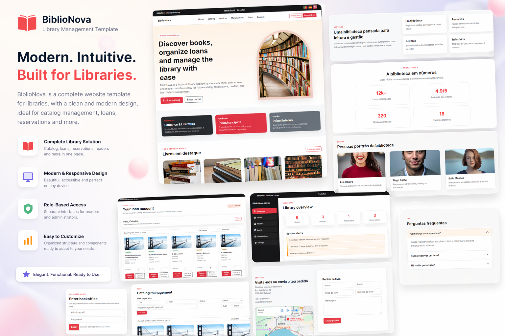

Publico-alvo
- Visitantes que querem conhecer servicos e explorar o catalogo.
- Leitores com conta ativa que precisam de uma area pessoal simples.
- Equipa da biblioteca que gere reservas, emprestimos e relatorios.
Case Study
BiblioNova e um website para uma biblioteca municipal ficticia, pensado para facilitar a experiencia de tres perfis: visitantes, leitores e equipa interna. O objetivo foi criar uma presenca digital clara, moderna e intuitiva, onde seja facil descobrir livros, fazer pedidos e acompanhar o que acontece na biblioteca.

A interface foi desenhada para reduzir passos desnecessarios e tornar cada acao mais direta. As escolhas de layout e navegacao ajudam quem visita pela primeira vez e tambem quem usa o sistema com frequencia. O resultado e um produto mais acessivel, coerente e facil de manter no dia a dia.
Com uma experiencia mais clara e organizada, a biblioteca consegue comunicar melhor os seus servicos, aumentar a interacao com os leitores e apoiar o trabalho da equipa interna com menos friccao.